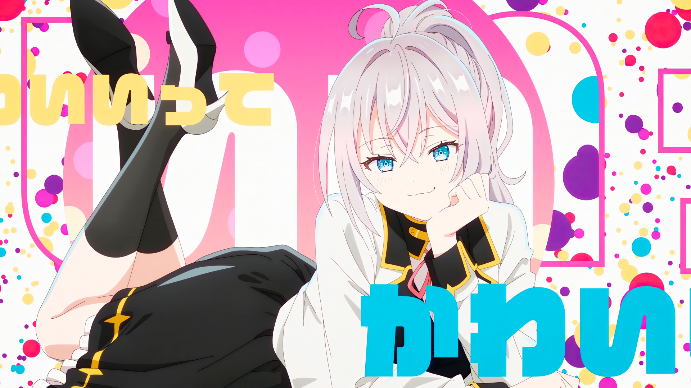

A flawless, untouchable presence that commands attention.
A gentle, caring personality kept strictly behind closed doors.
Accidentally confessing her true feelings in her native tongue.

Alya, whose full name is Alisa Mikhailovna Kujou, is a brilliant and graceful high school student known for her icy composure and quiet charm. Behind her calm and confident exterior lies a warmth she rarely allows others to see — a gentleness that hides behind polite smiles and carefully chosen words. Fluent in both Japanese and Russian, she often lets her true feelings slip out in Russian, believing no one around her understands them. But fate has a way of turning small assumptions into stories of connection.
Every day, she sits by the window — sunlight spilling softly across her silver hair, the light catching the edge of her serious blue eyes. She seems distant, untouchable, the kind of girl who belongs in a painting rather than a classroom. Yet behind that composed presence is someone who laughs quietly to herself, who worries about the smallest things, who blushes when someone looks her way for too long. She hides it well, but the truth lingers between every word she refuses to say aloud.
Alya’s life is a delicate balance of grace and restraint. She excels in everything she does, from her studies to her manner of speech, carrying herself with an elegance that makes her the envy of her peers. But perfection can be heavy. Beneath her flawless image lies a girl who longs to be understood — not for her achievements or beauty, but for the quiet emotions she keeps tucked behind her confident smile.
Sometimes, when her guard slips, her voice softens, and Russian words escape her lips like a secret melody. It’s her way of confessing without confessing, of saying things her heart feels but her pride can’t allow. To most, it sounds foreign and beautiful. To the one who understands, it’s a glimpse into the real Alya — the one who loves, hesitates, and dreams in a language that feels safer than her own.
Her charm doesn’t lie in grand gestures or loud emotions but in her subtlety. The way she turns her head when embarrassed, the faint blush that colors her cheeks, the soft sigh she tries to hide when no one’s listening — these are the moments that reveal the truth she’s so desperate to conceal. She isn’t a girl built on perfection, but one made human by her contradictions — proud, fragile, and heartbreakingly sincere.